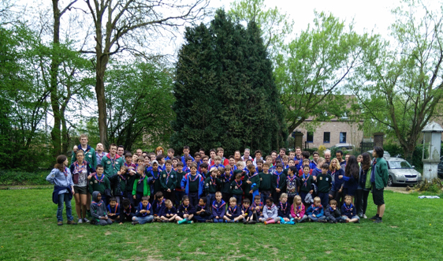

Pour vous, mon foulard scout ce n’est peut-être qu’un simple morceau de tissu roulé. Mais pour moi, c’est bien plus que cela. Pour moi, ça représente dix-sept années de ma vie. De mes cinq ans à mes vingt-trois ans, depuis les baladins jusqu’à chef éclaireur. Des moments de joie, des moments de peine. Des centaines d’anecdotes et de souvenirs.
Des moments de joie

Mon foulard scout c’est une fierté de le porter, de le brandir lors d’évènement scout, de le faire tourner en l’air à la fin des 24h vélos du bois de la cambre, de le protéger durant l’indien blanc. Car il n’est pas que le témoin de mon appartenance au scoutisme. Ses couleurs et son paterne sont uniques à mon unité qui comme une grande famille m’a vu grandir et m’a tant donné sans rien attendre en retour.
Comme une grande famille
Je tiens à mon foulard scout comme à la prunelle de mes yeux. Quand je ne le porte pas au scout, je me sens nu. Pourtant, il n’a pas de valeurs, mais je serais très triste de le perdre.